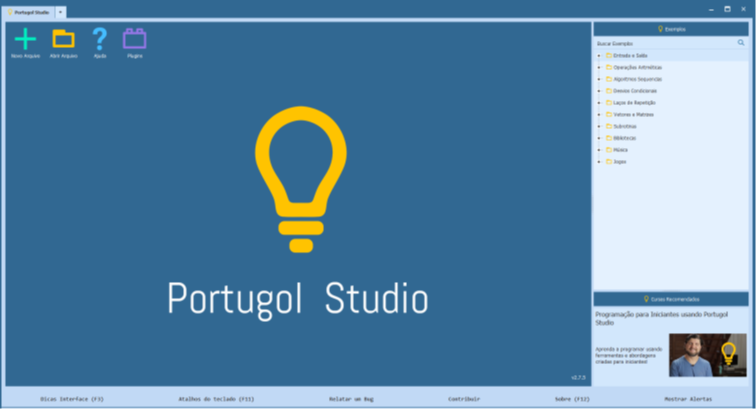

A instalação é bastante simples basta acessar o site e seguir os passos “next next...”, após a instalação você pode abrir o Portugol Studio e com isso será exibida a tela de início onde você pode criar um novo arquivo, abrir um arquivo, pedir ajuda ou instalar plug-ins e algumas outras coisas.
